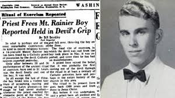

O agricultor já havia até entregado suas armas na delegacia semanas antes de ser encontrado desmaiado na sala de casa coberto de sangue e com cruzes invertidas desenhadas nos olhos.
Ed e Lorraine Warren logo foram chamados e cuidaram do caso do agricultor. Eles examinaram sua força incomum e fenômenos poltergeist que aconteciam na casa e chegaram
a conclusão de que se tratava de possessão demoníaca. Segundo o casal e sua equipe, Theriault havia pedido ajuda à forças sobrenaturais para superar traumas do passado e acabou sendo
possuído por quase toda a vida. O casal chamou o bispo Robert McKenna e o exorcismo foi realizado com sucesso.

Inicialmente, os Perron não se assustaram com as manifestações. A família também sentia cheiros estranhos, de carne podre a aroma de flores, variando conforme o cômodo. Mas as aparições ficaram mais frequentes, e novos "visitantes do além" surgiram, agora não tão bem intencionados como os primeiros. As crianças não conseguiam mais dormir, por conta das portas batendo, dos gritos de socorro e de puxões de cabelos e cobertores. Quem também passou a ser incomodada pelos espíritos, de maneira violenta, foi Carolyn.
Incomodada, Carolyn pesquisou o histórico da residência e fez descobertas assustadoras. A casa tinha um passado de terror, com oito gerações de uma mesma família vivendo e morrendo por lá, incluindo mortes misteriosas e violentas (assassinatos, suicídio e estupro). Ela também descobriu que uma mulher chamada Bathsheba Sherman, apontada pelos moradores locais como uma bruxa satanista, viveu e morreu no terreno, no século XIX, perdendo a vida ao se enforcar na parte externa da casa. Logo, seria o fantasma dela quem atacava Carolyn?
A chefe da família relatou ter sido torturada e possuída pelo espírito da antiga moradora em certa ocasião. Nesse dia, ela falava com uma voz diferente e chegou a ser arremessada de um quarto a outro, como contou uma das filhas, Andrea Perron. Diante dos ataques e ameaças, a família resolveu pedir ajuda. Assim, foram atrás dos famosos investigadores paranormais Ed Warren e Lorraine Warren, que, durante vários anos, tentaram ajudá-los a se livrar dos espíritos malignos por meio de sessões espíritas e até exorcismos.
Ao contrário do ocorrido no filme, Ed e Lorraine não conseguiram ajudar a família Perron, que continuou sendo perseguida pelos fantasmas. Os moradores chegaram a comentar que a presença deles só piorou a situação, deixando as assombrações mais violentas.Com isso, os Warren finalizaram o trabalho, e os moradores continuaram na casa, tendo que lidar com as assombrações, pois não tinham condições de bancar a mudança. Eles ficaram lá até 1980, quando se mudaram para o estado da Geórgia.